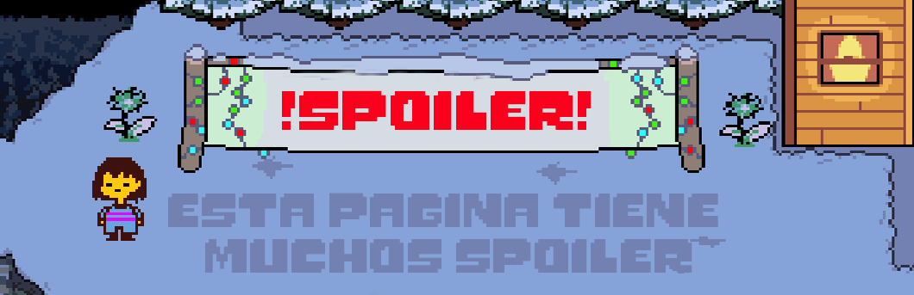

Hola camarada, bienvenido a una página creada con mucho cariño en la cual se hablará de Undertale, un juego de rol indie que desafía las convenciones de los juegos tradicionales. Con su estilo retro y su narrativa única, te sumergirás en un mundo habitado por monstruos y humanos. Toma decisiones morales, forja amistades y resuelve enigmas en tu búsqueda por la paz.
disfruta nuestra pagina y visita nuestras redes sociales
😄
